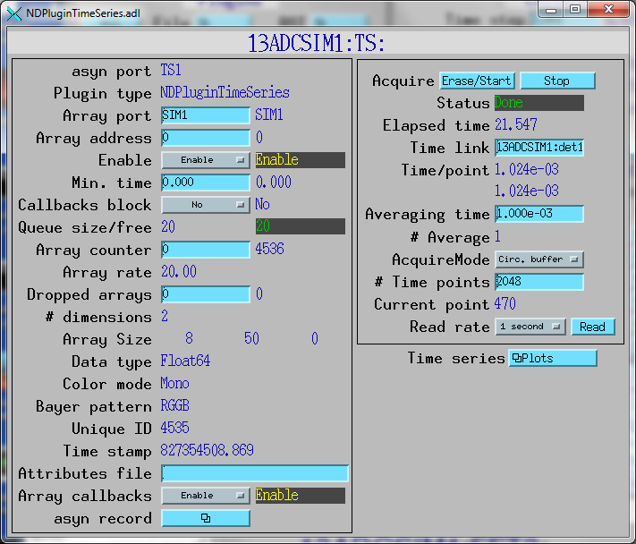
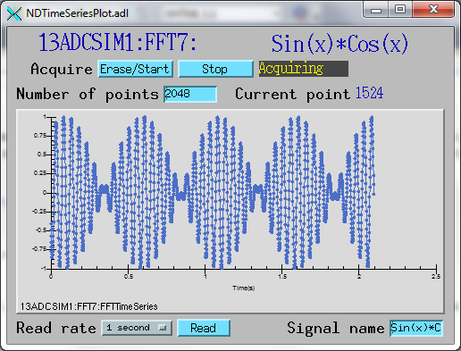

ADCSimDetector
- author:
Mark Rivers (University of Chicago)
Table of Contents
Introduction
This is an EPICS areaDetector driver for a simulated ADC driver. This driver generates times-series data for 8 signals as a 2-D array [8, NumTimePoints]. The signals are common waveforms (sine, cosine, square wave, sawtooth, random noise, etc.) The driver was written in part to test the new NDPluginTimeSeries plugin in ADCore R2-5. But it can also serve as a starting point for writing drivers that are used to collect time-series data like ADCs, waveform digitizers, etc.
Each signal in the driver describes a waveform. The equations governing these signals are similar. The equation for the sine wave is the following:
Signal[t] = Offset + Noise * random() + Amplitude * sin((time * Frequency + Phase/360.) * 2. * PI);
This driver inherits from asynNDArrayDriver. It also implements a number parameters that are specific to the ADC simulation detector. The ADCSimDetector class documentation describes this class in detail.
Simulation driver specific parameters
The simulation driver-specific parameters are the following:
Parameters for the driver as a whole, Parameter Definitions in ADCSimDetector.cpp and EPICS Record Definitions in ADCSimDetector.template |
||||||
|---|---|---|---|---|---|---|
Parameter index variable |
asyn interface |
Access |
Description |
drvInfo string |
EPICS record name |
EPICS record type |
P_Acquire |
asynInt32 |
r/w |
Start/stop acquisition. Values are:, 0: “Done”: Stops acquisition, 1: “Acquire”: Starts acquisition |
SIM_ACQUIRE |
$(P)$(R)Acquire, $(P)$(R)Acquire_RBV |
busy, bi |
P_TimeStep |
asynFloat64 |
r/w |
Time per data point |
SIM_TIME_STEP |
$(P)$(R)TimeStep, $(P)$(R)TimeStep_RBV |
ao, ai |
NumTimePoints |
asynInt32 |
r/w |
Number of time points to accumulate before calling registered plugins |
SIM_NUM_TIME_POINTS |
$(P)$(R)NumTimePoints, $(P)$(R)NumTimePoints_RBV |
longout, longin |
P_AcquireTime |
asynFloat64 |
r/w |
Total elapsed time before automatically stopping acquisition. If 0 then acquistion continues until manually stopped. Note that this is “simulated time”, i.e. the number of time points since acquisition was started * TimeStep. This may differ from actual time because of the processor speeds, granularity of epicsThreadSleep(), etc. |
SIM_ACQUIRE_TIME |
$(P)$(R)AcquireTime, $(P)$(R)AcquireTime_RBV |
ao, ai |
P_ElapsedTime |
asynFloat64 |
r/w |
Total elapsed time since acquisition was started. |
SIM_ELAPSED_TIME |
$(P)$(R)ElapsedTime |
ai |
Parameters for each signal N. Parameter Definitions in NDPluginTimeSeries.h and EPICS Record Definitions in ADCSimDetectorN.template |
||||||
P_Amplitude |
asynFloat64 |
r/w |
The amplitude of this signal. |
SIM_AMPLITUDE |
$(P)$(R)Amplitude |
ao |
P_Offset |
asynFloat64 |
r/w |
The offset of this signal. |
SIM_OFFSET |
$(P)$(R)Offset |
ao |
P_Phase |
asynFloat64 |
r/w |
The phase of the signal in degrees. |
SIM_PHASE |
$(P)$(R)Phase |
ao |
P_Noise |
asynFloat64 |
r/w |
The noise of this signal. This value is multipled by a random number between -1 and 1 for each time point. |
SIM_NOISE |
$(P)$(R)Noise |
ao |
P_Period |
asynFloat64 |
r/w |
The period of this signal. The frequency is calculated from the period. |
SIM_PERIOD |
$(P)$(R)Period |
ao |
P_Frequency |
asynFloat64 |
r/o |
The frequency of this signal, calculated from the period. |
SIM_FREQUENCY |
$(P)$(R)Frequency |
ai |
Configuration
The ADCimDetector driver is created with the ADCimDetectorConfig command, either from C/C++ or from the EPICS IOC shell.
int ADCSimDetectorConfig(const char *portName,
int numTimePoints, int dataType,
int maxBuffers, size_t maxMemory,
int priority, int stackSize)
The simDetector-specific fields in this command are:
numTimePointsInitial number of time points.dataTypeInitial data type of the detector data. These are the enum values for NDDataType_t, i.e.0=NDInt8
1=NDUInt8
2=NDInt16
3=NDUInt16
4=NDInt32
5=NDUInt32
6=NDFloat32
7=NDFloat64
For details on the meaning of the other parameters to this function refer to the detailed documentation on the simDetectorConfig function in the ADCSimDetector.cpp documentation and in the documentation for the constructor for the ADCSimDetector class.
There an example IOC boot directory and startup script (iocBoot/iocADCSimDetector/st.cmd) provided with ADExample.
MEDM screens
The following is the MEDM screen simDetector.adl for the simulation detector.
ADCSimDetector.adl
The NDPluginTimeSeries is used to collect the time series data from the ADCSimDetector, perform optional averaging. In this case it is being used in circular buffer mode. The NDArrays it produces are being used by the NDPluginFFT plugin to compute Fast Fourier Transforms.
NDPluginTimeSeries.adl

This is a plot for the sin(x)*cos(x) output. This screen contains some of the controls for the time series plugin.
NDTimeSeriesPlot.adl

This is a combined plot for the square wave output. It contains the time-series data, as well as the real, imaginary, and absolute value of the FFT. Note that the square wave FFT contains the fundamental frequency of 5 Hz, and all of the odd harmonics.
NDPluginTimeSeries.adl